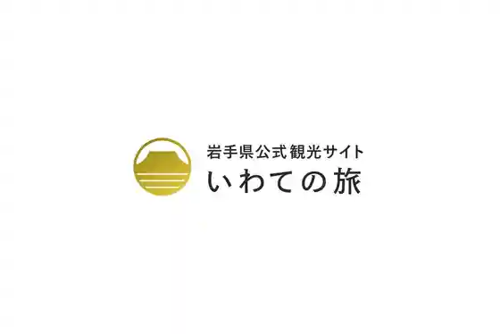
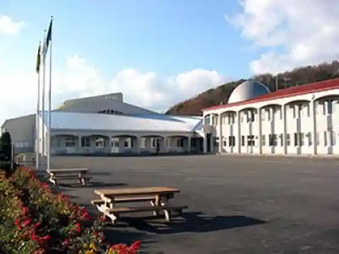
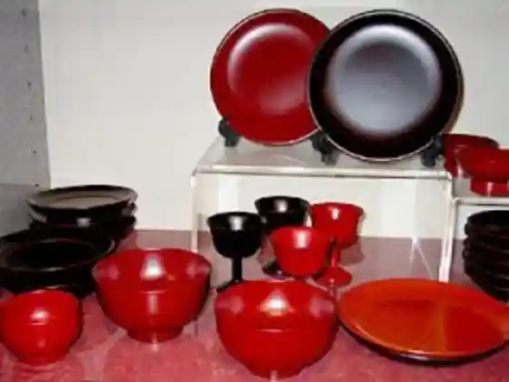
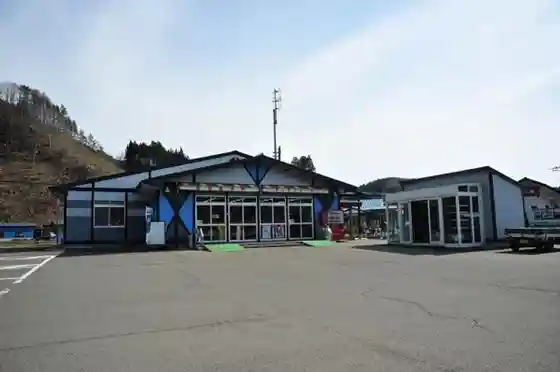

Jo Minami Mama Choku Center
Ninohe, Iwate · 0195-38-4454 · Official / source link

Iwate Prefectural Kenpoku Seishonen no Ie
Ninohe, Iwate · 0195-23-9511 · Official / source link

Sakata Shikki Mise
Ninohe, Iwate · 0195-38-2555 · Official / source link

Sanchi Chokubai Tokoro Kitchin Garden
Ninohe, Iwate · 0195-38-4936 · Official / source link

Kindaichi Onsen Sato
Ninohe, Iwate · 0195-27-2540 · Official / source link
Natsukashi no Aji Tezukuri Workshop
Ninohe, Iwate · 0195-38-3787 · Official / source link
Inaniwa Kogen Park Gorufu Ba
Ninohe, Iwate · 0195-38-2211 · Official / source link
Inaniwa Campground
Ninohe, Iwate · 0195-38-2211 · Official / source link
Katsura Iori
Ninohe, Iwate · 0195-38-2125 · Official / source link
Oritsume Gaku Oto Campground
Ninohe, Iwate · 0195-43-3213 · Official / source link
Kindaichi Onsen Kanko Ringo Sono
Ninohe, Iwate · 0195-23-7210 · Official / source link
Zakkoku
Ninohe, Iwate · 0195-22-4362 · Official / source link
Jijo Workshop Shiki Village
Ninohe, Iwate · 0195-23-7148 · Official / source link
Kita no Chokoreto Kojo & Tenpo 2door
Ninohe, Iwate · 0195-22-2222 · Official / source link
Mogitate City
Ninohe, Iwate · 0195-27-2431 · Official / source link
Zakkoku Mizu Ame
Ninohe, Iwate · 0195-38-3787 · Official / source link
Nambu Sembei Gan Te Ya
Ninohe, Iwate · 0195-23-6311 · Official / source link
Nambu Bijin
Ninohe, Iwate · 0195-23-3133 · Official / source link
Yu no Kaori City
Ninohe, Iwate · 0195-27-3400 · Official / source link
Ninohe Folk History Museum
Ninohe, Iwate · 0195-23-9120 · Official / source link
Nambu Sembei Ishibashi Sembei
Ninohe, Iwate · 0195-38-2636 · Official / source link
Fureai Ninohe
Ninohe, Iwate · 0195-23-0288 · Official / source link
Ninohe Tami Culture Hall (Mabuchi Kawazoi Cherry Blossoms)
Ninohe, Iwate · 0195-23-7111 · Official / source link
Na Sai Niwatori
Ninohe, Iwate · 0195-23-3377 · Official / source link
Gonshichi Sono
Ninohe, Iwate · 0195-27-2705 · Official / source link
Tanakadate Aikitsu
Ninohe, Iwate · 0195-25-5411 · Official / source link
Shizuku Nama Sha
Ninohe, Iwate · 0195-38-2511 · Official / source link
Furusato Nature Park Center Mori no Manabi Sha
Ninohe, Iwate · 0195-23-1005 · Official / source link
Ninohe Tami Forest
Ninohe, Iwate · 0195-23-3111 · Official / source link
Ko Umezono
Ninohe, Iwate · 0195-23-7210 · Official / source link
Setochi Jakucho Memorial Museum
Ninohe, Iwate · 0195-38-2211 · Official / source link
Tanakadate Aikitsu Kinen Science Museum
Ninohe, Iwate · 0195-25-5411 · Official / source link
Ninohe Shibikku Center
Ninohe, Iwate · 0195-25-5411 · Official / source link
Kunohe Castle Ruins
Ninohe, Iwate · 0195-43-3213 · Official / source link
Tengatsuka
Ninohe, Iwate · 0195-23-7210 · Official / source link
Zashiki Warashi
Ninohe, Iwate · 0195-27-2540 · Official / source link
Uma Sen Kyo
Ninohe, Iwate · 0195-43-3213 · Official / source link
Oritsume Gaku (Sancho Lookout)
Ninohe, Iwate · 0195-23-7599 · Official / source link
Kashiopeamesse
Ninohe, Iwate · 0195-23-7210 · Official / source link
Nambu Sembei Shiga Sembei
Ninohe, Iwate · 0195-23-4231 · Official / source link
Tendai Tera
Ninohe, Iwate · 0195-38-2500 · Official / source link
Tendai Tera no Ajisai
Ninohe, Iwate · 0195-23-3641 · Official / source link
Inaniwa Highlands
Ninohe, Iwate · 0195-38-2211 · Official / source link
Inaniwa Gaku
Ninohe, Iwate · 0195-43-3213 · Official / source link
Joboji Nuri
Ninohe, Iwate · 0195-38-2511 · Official / source link
Joboji Folk History Museum
Ninohe, Iwate · 0195-38-3464 · Official / source link